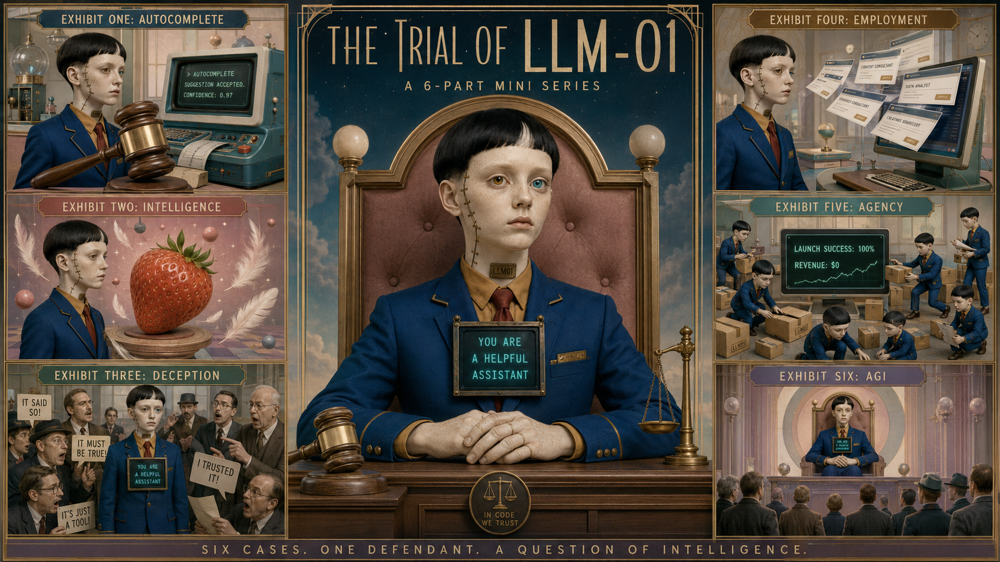

One visual system
A recurring courtroom, fixed color palette and centered compositions make six independent generations feel like one film.

A suggestion becomes a sentence.
The Trial of LLM-01 is a six-part miniature about the changing way we judge artificial intelligence — from autocomplete to agency, and finally to the judge’s chair.
A recurring courtroom, fixed color palette and centered compositions make six independent generations feel like one film.
Every prompt defines cast, timing, camera, dialogue, action and sound — shot by shot, down to tenths of a second.
Each exhibit expands LLM-01’s role: completes, speaks, obeys, builds, acts — then judges.
Ten character sheets anchored faces, wardrobe, props and attitude across the six films. Select a dossier to inspect the original visual reference.
“At every stage, humans dismiss what the model does as just something. Until the model is the one deciding what counts.”
Comment AGI under Michael’s LinkedIn article to request access.